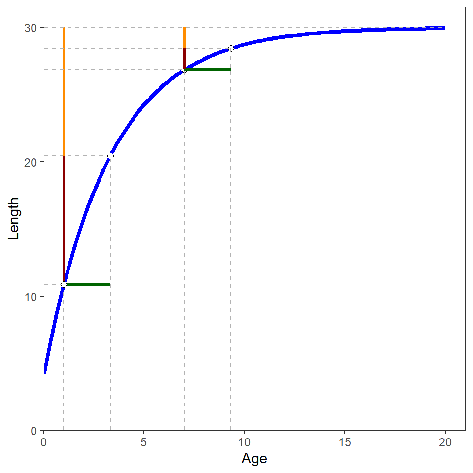

library(dplyr)
Note
The following packages are loaded for use below. One function from FSA is also used below, but the full package was not loaded here. In addition, the plot was created with ggplot2, though the code is not shown in this post.
Introduction
A colleague recently questioned whether \(\frac{log_{e}(2)}{K}\), where \(K\) is the Brody growth coefficient in the typical parameterization of the von Bertalanffy growth function, represents the “time it takes for a fish to grow from any length to a length halfway between the initial length and the asymptotic mean length (\(L_{\infty}\))”. This phenomenon is briefly illustrated below.
One Age
- Create an R function for the typical von Bertalanffy growth function.
vb <- FSA::vbFuns()- Declare parameter values.
Linf <- 30
K <- 0.3
t0 <- -0.5- Predict mean length at some initial age.
initA <- 1
( initL <- vb(initA,Linf,K,t0) )#R| [1] 10.87116- Predict mean length at the initial age plus \(\frac{log_{e}(2)}{K}\).
nextA <- initA+log(2)/K
( nextL <- vb(nextA,Linf,K,t0) )#R| [1] 20.43558- Find the length that is halfway between the initial length and \(L_{\infty}\).1
1 all.equal() is used to test equality with a tolerance for machine precision.
( hwL <- mean(c(initL,Linf)) )#R| [1] 20.43558all.equal(nextL,hwL)#R| [1] TRUENote that these last two values are equal, which illustrates the statement above about the “half-life” meaning of \(K\).
This can be repeated for a different initial age.
initA <- 7
( initL <- vb(initA,Linf,K,t0) )#R| [1] 26.83802nextA <- initA+log(2)/K
( nextL <- vb(nextA,Linf,K,t0) )#R| [1] 28.41901( hwL <- mean(c(initL,Linf)) )#R| [1] 28.41901all.equal(nextL,hwL)#R| [1] TRUE
The two examples above can be examined in Figure 1, where the horizontal green lines illustrate the increase from the initial ages (e.g., 1 and 7) by \(\frac{log_{e}(2)}{K}\), the vertical red line is the change in length from the initial length to half of \(L_{\infty}\), and the vertical orange line is the remaining change in length to \(L_{\infty}\). The half-life property of \(K\) is thus illustrated by the equivalent lengths of the paired red and orange lines.

Multiple Ages
This process is repeated below for several initial age values. Note that the differences between the predicted mean length at the new age and the point halfway between the initial length and \(L_{\infty}\) are equal (within machine precision) for each initial age. Again, illustrating the statement about \(K\).
data.frame(initA=1:20) |>
mutate(initL=vb(initA,Linf,K,t0),
nextA=initA+log(2)/K,
nextL=vb(nextA,Linf,K,t0),
hwL=(initL+Linf)/2,
areEqual=all.equal(nextL,hwL))#R| initA initL nextA nextL hwL areEqual
#R| 1 1 10.87116 3.310491 20.43558 20.43558 TRUE
#R| 2 2 15.82900 4.310491 22.91450 22.91450 TRUE
#R| 3 3 19.50187 5.310491 24.75093 24.75093 TRUE
#R| 4 4 22.22279 6.310491 26.11140 26.11140 TRUE
#R| 5 5 24.23850 7.310491 27.11925 27.11925 TRUE
#R| 6 6 25.73178 8.310491 27.86589 27.86589 TRUE
#R| 7 7 26.83802 9.310491 28.41901 28.41901 TRUE
#R| 8 8 27.65755 10.310491 28.82878 28.82878 TRUE
#R| 9 9 28.26467 11.310491 29.13234 29.13234 TRUE
#R| 10 10 28.71444 12.310491 29.35722 29.35722 TRUE
#R| 11 11 29.04763 13.310491 29.52382 29.52382 TRUE
#R| 12 12 29.29447 14.310491 29.64723 29.64723 TRUE
#R| 13 13 29.47733 15.310491 29.73866 29.73866 TRUE
#R| 14 14 29.61280 16.310491 29.80640 29.80640 TRUE
#R| 15 15 29.71315 17.310491 29.85658 29.85658 TRUE
#R| 16 16 29.78750 18.310491 29.89375 29.89375 TRUE
#R| 17 17 29.84257 19.310491 29.92129 29.92129 TRUE
#R| 18 18 29.88338 20.310491 29.94169 29.94169 TRUE
#R| 19 19 29.91360 21.310491 29.95680 29.95680 TRUE
#R| 20 20 29.93600 22.310491 29.96800 29.96800 TRUE
Different Parameters
The code below illustrates the same phenomenon for a very different set of parameter values.
Linf <- 300
K <- 0.9
t0 <- 1
data.frame(initA=1:20) |>
mutate(initL=vb(initA,Linf,K,t0),
nextA=initA+log(2)/K,
nextL=vb(nextA,Linf,K,t0),
hwL=(initL+Linf)/2,
areEqual=all.equal(nextL,hwL))#R| initA initL nextA nextL hwL areEqual
#R| 1 1 0.0000 1.770164 150.0000 150.0000 TRUE
#R| 2 2 178.0291 2.770164 239.0146 239.0146 TRUE
#R| 3 3 250.4103 3.770164 275.2052 275.2052 TRUE
#R| 4 4 279.8383 4.770164 289.9192 289.9192 TRUE
#R| 5 5 291.8029 5.770164 295.9014 295.9014 TRUE
#R| 6 6 296.6673 6.770164 298.3337 298.3337 TRUE
#R| 7 7 298.6450 7.770164 299.3225 299.3225 TRUE
#R| 8 8 299.4491 8.770164 299.7246 299.7246 TRUE
#R| 9 9 299.7760 9.770164 299.8880 299.8880 TRUE
#R| 10 10 299.9089 10.770164 299.9545 299.9545 TRUE
#R| 11 11 299.9630 11.770164 299.9815 299.9815 TRUE
#R| 12 12 299.9849 12.770164 299.9925 299.9925 TRUE
#R| 13 13 299.9939 13.770164 299.9969 299.9969 TRUE
#R| 14 14 299.9975 14.770164 299.9988 299.9988 TRUE
#R| 15 15 299.9990 15.770164 299.9995 299.9995 TRUE
#R| 16 16 299.9996 16.770164 299.9998 299.9998 TRUE
#R| 17 17 299.9998 17.770164 299.9999 299.9999 TRUE
#R| 18 18 299.9999 18.770164 300.0000 300.0000 TRUE
#R| 19 19 300.0000 19.770164 300.0000 300.0000 TRUE
#R| 20 20 300.0000 20.770164 300.0000 300.0000 TRUEReuse
Citation
BibTeX citation:
@misc{h.ogle2016,
author = {Derek H. Ogle},
title = {Half-Life {Property} of {K}},
date = {2016-06-12},
url = {https://fishr-core-team.github.io/fishR//blog/posts/2016-6-12_Halflife_of_K},
langid = {en}
}
For attribution, please cite this work as:
Derek H. Ogle. 2016, June 12. Half-Life
Property of K.